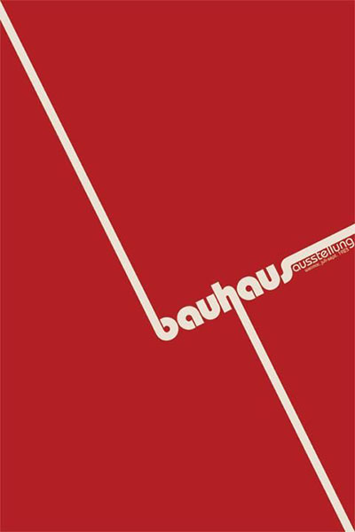
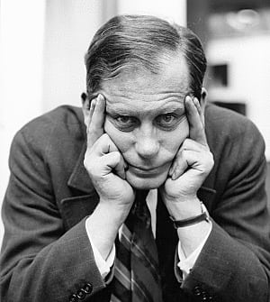
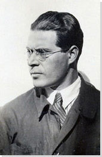
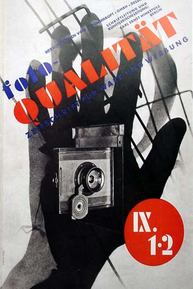
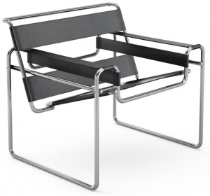
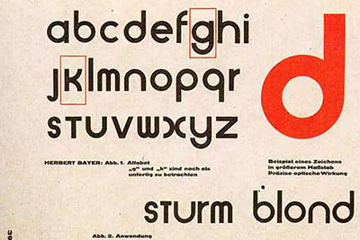
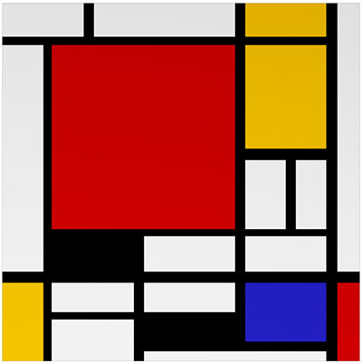
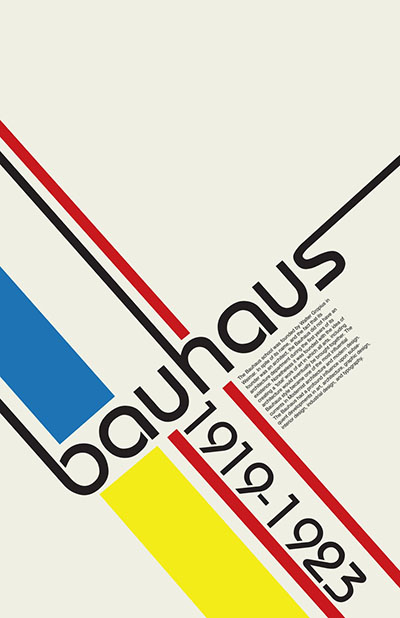

Om
Staatliches Bauhaus blev oprettet i 1919. Walter Gropius blev indsat som forstander for de to Weimar designskoler.
Han slog dem sammen, og nu var Bauhaus designskole skabt.
...
En ny måde at tænke ‘design’ på Bauhaus var en ikonisk designskole fra 20’ernes tyskland. Her arbejdede eleverne i forskellige workshops, blandt andet i sløjd, metalarbejde, mø- beldesign, fotografi og tekstilfremstilling.
Skolens overordnede designidéer kan derfor ndes på mange forskellige områder og teksturer. Bauhaus var banebrydende i sin tilgang til kunst og arkitektur, samtidig med at det lancerede gra sk design som et vigtigt kommercielt element i f.eks. reklamer.
Bauhaus’ tilgang til undervisningen og dens designideer, har haft tydelig ind ydelse på kunst, arkitektur og reklamebranchen som vi kender den i dag!
Industrialiseringen skal være synlig! Bauhaus’ idé var, at alt over ødigt skulle skæres fra. Før havde man været vant til, at design var overdådigt og storslået, og nu ville man gerne have, at det var simpelt og minimalistisk. Alt i et klassisk Bauhaus design har en funktion, og man gjorde ofte brug af geometriske former og stærke farver.
Man vil typisk finde cirkler, firkanter og trekanter i en klassisk Bauhaus plakat, klædt i stærke farver. De foretrukne farver var rød, gul og blå. Ønsket om industrialisering førte på møbelkunstens område til benyttelse af bøjede stålrør eller helt lige trækomponenter, anvendt af bl.a. Walter Gropius og Marcel Breuer.

Eksempler

Walter Gropius - staatliches Bauhaus
The ‘Godfather’ for moderne arkitektur
Walter Gropius revolutionerede hvad moderne arkitektur er. Hans designideer ses overalt i den verden vi kender idag.
Han grundlagde Bauhaus skolen (Staatliches Bauhaus) i 1919 og kickstartede den nye bev- ægelse inden for kunst og arkitektur. Ideen var, at bevægelsen skulle kombinere kreativitet og masseproduktion.
Mere minimalisme
I 1919 blev Weimar School of fine arts og Weimar School of Arts and Crafts lagt sammen, og Bau- haus blev dannet. Før havde man tænkt, at kunst og design skulle produceres til individet. Walter Gropius ville revolutionere design, og lavede derfor en ny målsætning for Bauhaus. Den detal- jerede og ekspressionistiske tanke blev erstattet af en logisk tilgang til design. Et af Walter Gropius’ mest ikoniske designs, var skolen selv. Den var ad og rkantet, og alt havde en funktion.
Masseproduktion
Selvom “masseproduktion” idag kan klinge hult hos nogen, var det meget nyt i Bauhaus’ levetid. Det var ud fra ideen om, at alle skulle have adgang til smukt og enkelt design, at Bauhaus opererede. Walter Gropius har været forgængeren for de store firkantede lejlighedskomplekser vi kender idag.


Lázslo Moholy-Nagy - Typography
Typografiens mester
Inden for grafisk design var arbejdet af Lászlo Moholy-Nagy banebrydende. Hans teorier og eksperimenter med typophoto - en kombination af fotografi og skrift - har haft stor indflydelse på reklamebranchen som vi kender den i dag.Før havde man adskilt stilarterne, men Moholy-Nagy var stor fortaler for at kombinere så bredt som muligt.
Sammensmeltning af kunstformer
Han mente kunst skulle bruge alle elementer af forskellige kunstformer på kryds og tværs, om så det var skulpturer, arkitektur eller plakatdesign.
Før Moholy-Nagys sammensætninger var grafisk design ikke en prioriteret kunstform på skolen og i samfundet, men blev vigtigere med tiden. Det endte som noget af det mest huskede fra designskole.
Den blev også vigtig, eftersom den havde stor kommerciel værdi og skolen tjente penge på at sælge plakater som de studerende havde lavet.
Moholy-Nagys ideer
Nu bliver det lidt eksistentielt. Moholy-Nagy troede, at mennesket kun kunne overvinde hvad modernismen havde ødelagt, ved at udnytte modernismens nye teknologier.
Derfor mente han, at kunstnere skulle transformere sig selv om til designere, og gennem specialisering og eksperimentering, finde svar på hvad mennesket egentlig har brug for.


Marcel Breuer - Møbeldesign
Moderne Møbeldesign
Under Marcel Breuer i 1924-1928, genopfandt Bauhaus hvad møbler skulle være og kunne
Blandt andet brugte de stål og træ, og konstruktionen var synlig.
Marcel Breuer blev blandt andet inspireret af hans cykelstel, og eksperimenterede med at lave letvægtsstole i metal.
Intentionen var, at producere flot, enkelt og funktionelt design til så mange mennesker som muligt, men mange af produkterne viste sig at være for dyre at producere.
Art Into Industry
Skolen ville bevare fokus på det solide håndværk og simple design, og fik dermed et af deres slogans, “Art Into Industry”.
Bauhaus designerne så nemlig deres produkter som kunstværker.
Marcel Breuer fortalte en interviewer kort før hans død, at han mente at et af hans største bidrag til industrien var, at han havde tilpasset gamle arkitekters ideer til modernitetens nye behov.
Marcel Breuer udviklede teorien om at møbler gerne måtte være hvad de udgav sig for. Det var ideen, at man skulle se hvad møblet var lavet af. Han eksperimenterede blandt andet med metal-møbler, inspireret af hans letvægtscykel, og udviklede lette metal-stole med mulighed for masseproduktion.
Marcel Breuers mest anerkendte værk er Wassily lænestolen.

typografi

sans serif
Herbert Bayer, en af skolens undervisere, så behovet for en ny skrifttype. Han ønskede en font, der var så enkel i sit udtryk som muligt.
Han udviklede fonten “Universal” i 1925. Han mente, at seriffer var unødvendige for bogstavets struktur, og udviklede fonten, som skulle kommunikere klart ved hjælp af geometriske og simple bogstaver.
Vidste du?
En “serif” er den lille fod, vi kender fra andre skrifttyper, som f.eks. Times New Roman “Sans” er fransk, og betyder “uden”. “Sans serif” dækker altså over et bogstav uden fødder.
klar i spyttet
Underviserne fra Bauhaus mente, at typogra en kunne på- virke måden man modtager en besked på. Ved brug af en mere simpel typogra , bestående af harmoniske geometriske former, kraftfulde farver, og sans serif i både store og små bog- staver, blev budskabet klarere, og formidlet mere effektivt. Man mente, at bog- stavets funktion, altså dét at formidle, skulle sættes frem for alt andet.

farve og funktion

Johannes Ittens colorwheel
Det var Johannes Itten, en af skolens undervisere, der ud- viklede kurset som lærte eleverne på Bauhaus det grundlæggende om farve og farvesammensætning.
Colorwheel
Han skabte også farvehjulet som er baseret primært på en triade af rød, blå og gul og indeholder 12 andre nuancer. Farv- erne i triaden samt sort og hvid er de mest fremtrædende i stilarten.
Johannes Itten var ham der for første gang karakteriserede farver i temperatur, og man har siden dengang brugt udtrykket ‘kold’ eller ‘varm’ om en farve.
Han mente, at farver udtrykker en følelse, og at de kunne bruges til at beskrive for eksempel en sindstilstand.
Funktion
På Bauhaus brugte man farver til at fremvise en bestemt funktion. Det skulle altid stå klart hvad hensigten var, og man benyttede sig derfor af kraftige og klare farver.

Links
http://www.bauhaus-movement.com/en/
http://www.theartstory.org/movement-bauhaus.htm
https://99designs.dk/blog/creative-inspiration/know-your-design-histo- ry-the-bauhaus-movement/
http://www.metmuseum.org/toah/hd/bauh/hd_bauh.htm
http://www.designhistory.org/Avant_Garde_pages/BauhausType.html
http://www.designhistory.org/Type_milestones_pages/SansSerif.html
http://www.widewalls.ch/bauhaus-typography/joost-schmidt/
http://www.spiegel.de/international/zeitgeist/the-legacy-of-modern- ism-celebrating-90-years-of-bauhaus-a-610283.html
http://www.designhistory.org/Avant_Garde_pages/BauhausType.html
http://www.designhistory.org/Type_milestones_pages/SansSerif.html
http://www.widewalls.ch/bauhaus-typography/joost-schmidt/
http://www.typograe.info/3/uploads/42efc2bc94035f917a148ed96fb- 3befd.gif
http://www.designhistory.org/Avant_Garde_pages/images_avantgarde/ universal.jpg